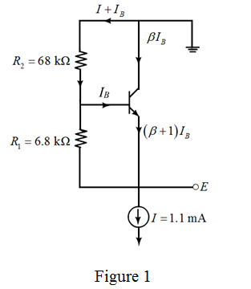

Calculate the current through the resistor .
.
The current through the resistor  is .
is .
Refer to Figure P6.43 in the text book.
Redraw the circuit diagram by making the current directions as shown in Figure 1.

Calculate the current that flows through the resistors:
From the circuit, it is clear that is,
Calculate the current through the resistor.
The current through the resistor is .
Calculate the value of the current.
Calculate total current that flows through the resistor .
.
Therefore, the current flow through the resistor is .
Calculate the voltage .
Given that the temperature coefficient of  for the current
for the current constant is. Consider the expression.
constant is. Consider the expression.
The temperature coefficient is.
Calculate the voltage at the node E at an ambient temperature of:
Therefore, the voltage at the node E at an ambient temperature of is .